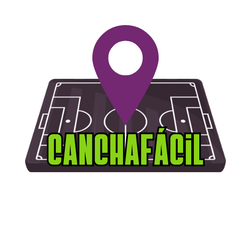

En la Cra. 42a #17-68 en Bogotá, encontrarás una de nuestras canchas sintéticas diseñadas para brindarte la mejor experiencia de juego, con comodidad, seguridad y fácil acceso.
Nuestra cancha sintética ofrece césped de alta calidad que asegura un rendimiento óptimo durante cada partido, ya sea en entrenamientos, torneos o juegos recreativos con amigos. Cuenta con iluminación LED que permite programar encuentros tanto en el día como en la noche, además de zonas de descanso y graderías para acompañantes. El espacio está pensado para que disfrutes del fútbol en un ambiente moderno, seguro y agradable, ideal para equipos, familias y grupos de amigos que buscan un lugar confiable para jugar y compartir la pasión por el deporte.